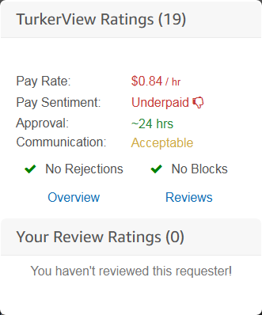

TSolo315
MturkCrowd
Six years of turking experience
TSolo315
MturkCrowd
Six years of turking experience
Getting the most out of Mechanical Turk
Several tools have been created to help workers be more productive on Mechanical Turk. Many of these tools come in the form of userscripts you can install in your web browser. In this guide I will walk you through getting started with installing Mturk scripts and will help you find the most helpful scripts for the aspiring turker. Before we start I will define some important terms.
The very first thing you need to do is grab the Chrome Tampermonkey extension, or the Firefox Tampermonkey extension. This extension will allow you to install and utilize a majority of Mturk userscripts (a few scripts are in the form of browser extensions in which case Tampermonkey is not a requirement.) After this is done you are ready to start installing. For the purpose of this guide I'm going to separate scripts into two categories, "primary scripts," which will be major scripts that offer a large variety of functionality, and "accesory scripts," which will be smaller or single-purpose scripts. A list of primary scripts can be found here: Primary Scripts. Browse through it and install the ones that look the most useful (I personally recommend grabbing Mturk Suite and Turkerview.) A list of accessory scripts can be found here: Accessory Scripts.
HIT Reviews
Because it can often be difficult to distinguish the good HITs from the bad, HIT review services are practically a neccessity for efficient turking. Before these services existed it was a challenge to tell the trustworthy, professional requesters from those trying to exploit a cheap workerbase. With a review script installed all you need to do is scroll over an icon on the HIT page review information will be conveniently displayed . While reviews are not infalliable, they do provide a great baseline for making a judgement call on whether a HIT is worth working on or not. Both Turkerview and Turkopticon allow turkers to leave reviews and provide tools to view the review information on the HITs page, but at the moment Turkerview is the more widely used (and actively developed) of the two.
Scrapers
Tools like HIT Finder from Mturk Suite and Mturk Engine include a HIT table that will be populated with HITs from the main HIT page on Mturk, displayed in a manner that is easier to scan. These scrapers allow you to do things like block HITs or requesters from appearing in the HIT table or alert you of new HITs being posted; features that are sorely lacking on Mechanical Turk. A few tips regarding scrapers:
Pandas
Learning your way around Pandas is easily the fastest way to start making more money on Mturk. Missed a HIT that looked good? Put it on panda. Trying to catch a HIT from a popular batch? Put it on Panda. Does a requester post a HIT regularly throughout the day? Put it on Panda. Several Mturk scripts offer the ability to save, organize, and run Pandas. Examples include Mturk Suite and Panda Crazy.
Accessory Scripts
There are a variety of useful scripts that are smaller in scope, serving a single purpose or helping with single type of HIT. If you run into a problem that you think could be solved by a script, it doesn't hurt to run a search on Google or Greasyfork to see if someone has uploaded a script that could solve said problem. If you really want to set yourself apart from the competition, learning how to write your own scripts is a good way to do so. While Mturk userscripts are primarily written in Javascript, you could also write useful macros with tools such as AutoHotkey or iMacros (both of which are significantly easier to learn). A collection of tutorials on how to write AutoHotkey scripts to help make HITs more efficient can be found here: Tutorials for Turkers: AutoHotkey.
Outdated Scripts
There are several scripts that at one time were heavily used but have now fallen into disuse or are entirely non-functional. This is often due to the script author no longer providing updates for these scripts. This can be confusing for new turkers because when searching for information about Mturk Scripts, these scripts will still pop up -- often with glowing recommendations. Here is a short list of Mturk scripts you should avoid as better (or actually functional) alternatives are available: HIT Scraper, HIT Database, TurkMaster, HIT Monitor, Turk Alert/Page Monitor.
Mturk Advantage
For those serious about turking and looking for a professional tool to help give them an edge, Mturk Advantage is an application I created with several features not found in publicly available scripts. Click here to learn more about Mturk Advantage.
Learn More: Leveling Up